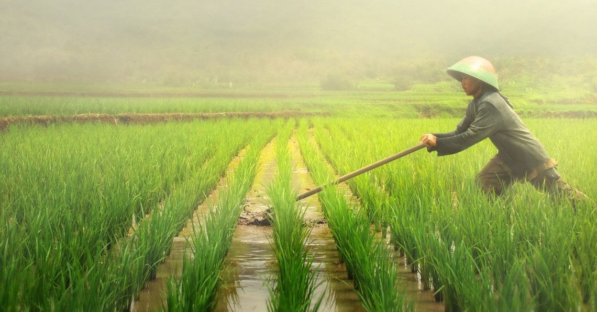

Berita Terkini

Hama Wereng Semakin Menjadi, Petani Solo Merugi(03/09/2019)
Solo,Jawa Tengah. Petani mengeluhkan hama wereng yang semakin banyak sehingga membuat petani merugi cukup besar
Bajak Sawah Dengan Cara Tradisional(08/09/2019)
Gianyar,Bali. Penduduk gianyar masih menggunakan sapi untuk membajak sawah
Panen Sukses, Petani Untung Besar
Situbondo, Jawa Timur. Tanaman bebas hama, petani bahagia mendapatkan untung yang besar